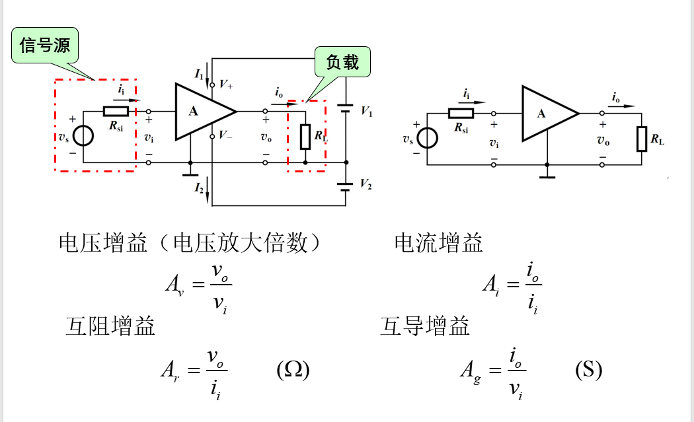
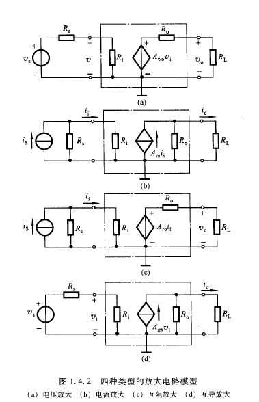

放大电路模型，基本定义，符号，几种争议的定义，主要的性能指标，频率响应的定义，认识图和图上的点，知道失真与非线性失真的概念（看到图知道什么回事）
放大电路模型
信号的基本概念
信号：信息的载体-温度、压力、速度、声音、亮度。。
电信号：用电量描述信息的变化
电信号源的电路表达形式：电压源等效电路、电流源等效电路
模拟信号：在时间和幅值上都是连续的信号
数字信号：在时间和幅值上都是离散的信号
按照时间和幅值的连续性和离散性分类：
- 时间连续、数值连续：模拟信号
- 时间离散、数值连续：AD转换信号
- 时间连续、数值离散：DA转换信号
- 时间离散、数值离散：数字信号
放大电路
放大电路是模拟电路中最基本的单元电路
一般的放大电路基本如下：
处于简便考虑，通常会将放大电路的工作电源给隐去，如右图所示
放大电路是一个双口网络，可以利用端口特性来研究放大电路
输入端口等价为一个电阻，输出端口根据不同情况等效为不同的电路形式
放大电路模型
- 电压放大模型
- $R_i$：输入电阻
- $R_o$: 输出电阻
- $A_{vo}$: 负载开路时的电压增益
- 由$v_o=A_{vo}v_i\frac{R_L}{R_O+R_L}$可知，电压增益为$A_v=\frac{v_o}{v_i}=A_{vo}\frac{R_L}{R_O+R_L}$
- 可知：负载大小会影响增益大小，故而要$R_o<<R_L$,理想情况输出电阻为0
- 输入回路对信号源的衰减，故而$R_i>>R_S$,理想情况取无穷大
- 电流放大模型
- 同上分析可知电流增益为$A_i=A_{is}\frac{R_O}{R_O+R_L}$
- 要减少负载的影响，故而要$R_O>>R_L$,理想情况下取无穷
- 要减小信号源的衰减，故而$R_i<<R_s$,理想情况为0
- 互阻放大模型
- 互导放大模型
- 隔离放大电路模型
放大电路主要性能指标
输入电阻
$R_i=\frac{v_i}{i_i}$
输入电阻决定了放大电路从信号源吸收信号幅值的大小
电压放大和互导放大的输入信号为电压，要求输入电阻大
电流放大和互阻放大的输入信号为电流，要求输入电阻小
输出电阻
输出电阻决定了放大电路带负载的能力
电压放大和互阻放大的输出信号为电压，要求输出电阻小
电流放大和互导放大的输出信号为电流，要求输出电阻大
注意：输入、输出电阻为交流等效电阻
增益
反映了放大电路在输入信号控制下，将供电电源能量转换为输出信号能量的能力
其中，$A_v$和$A_i$常用分贝（dB）表示
- 电压增益 $= 20\lg|A_v|$
- 电流增益 $= 20\lg |A_i|$
- 功率增益 $= 10lg A_p$
频率响应及带宽
输入正弦信号情况下，输出随输入信号频率连续变化的稳态响应，称为放大电路的频率响应
$A_V(\omega)=|\frac{\dot{V}_O(j\omega)}{\dot{V}_i(j\omega)}|$： 幅频响应，反映电压增益的模和角频率之间的关系
$\angle \varphi(\omega) = \varphi_o(\omega) - \varphi_i (\omega)$：相频响应，反映输入正弦信号的相位差与角频率之间的关系
带宽BW=$f_H$(上限频率) - $f_L$(下限频率)
输出功率约等于中频区的一般的点称为半功率点
失真：
- 频率失真(线性失真)
- 幅度失真：对不同频率的信号增益不同
- 相位失真：对不同频率信号的相移不同
- 非线性失真：由原件非线性特性引起的失真，在频谱图上表现为由新的频率分量产生